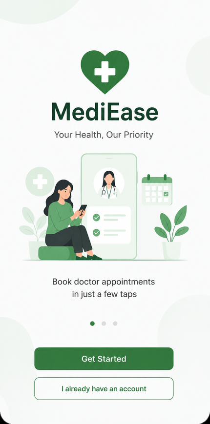
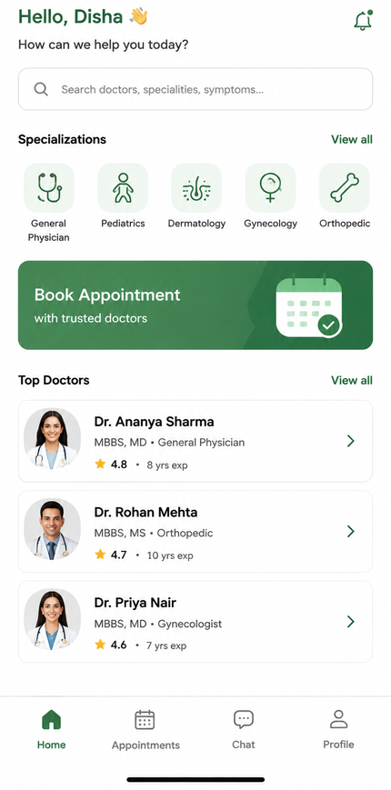
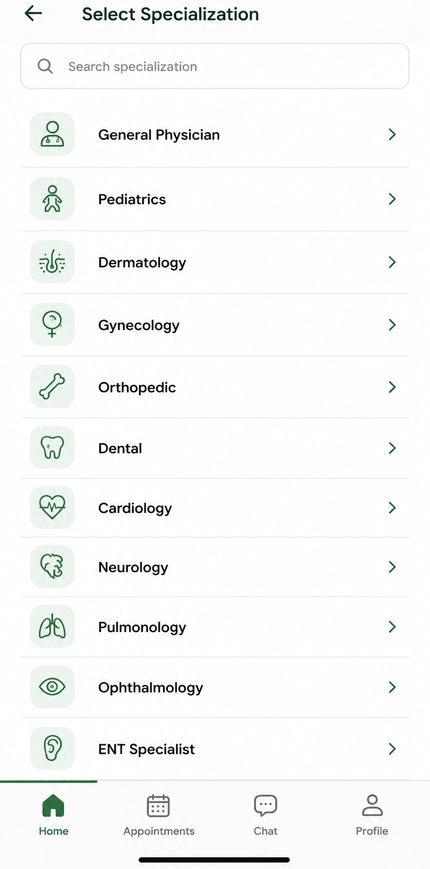
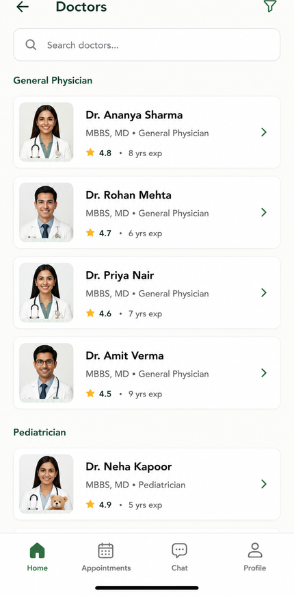

MediFlow
Project Overview
MediFlow is a healthcare appointment app concept designed to help patients book doctor consultations quickly, understand appointment availability, and feel more confident while choosing care. The design focuses on trust, clarity, and speed for people who are often stressed or in a rush when seeking medical help.
Problem
Many patients struggle with confusing booking processes, unclear doctor options, and poor visibility into available time slots. The app needed to make booking feel simple, reassuring, and easy even for first-time users.
Solution
I designed a minimal and calm interface with three key actions: find a doctor, choose a time slot, and confirm the appointment. The app uses clear categories, soft visuals, and readable information to reduce anxiety and improve decision-making.
Key outcomes
Design process
- Research: Studied common healthcare app frustrations like unclear slot selection and overwhelming information.
- User flow: Built a simple flow from home → doctor selection → appointment booking → confirmation.
- Information hierarchy: Prioritized doctor specialization, time slots, and appointment summary for quick decision making.
- Visual style: Chose soft green and white tones to feel clean, trustworthy, and calm.
- Usability focus: Reduced extra steps so users can complete booking in a few taps without confusion.
App screens




Why it works for a UX intern profile
This project shows I can think from the user’s perspective, organize information clearly, and create a polished mobile experience without unnecessary clutter. It demonstrates beginner-level UX thinking, emotional design, and understanding of healthcare app usability.